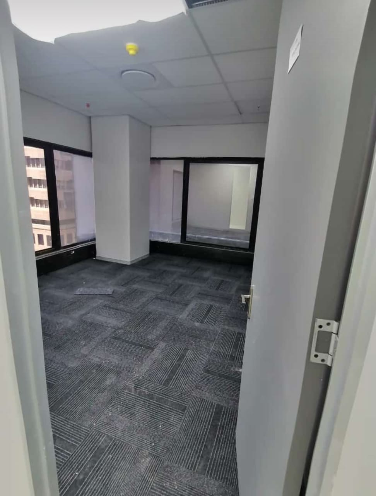
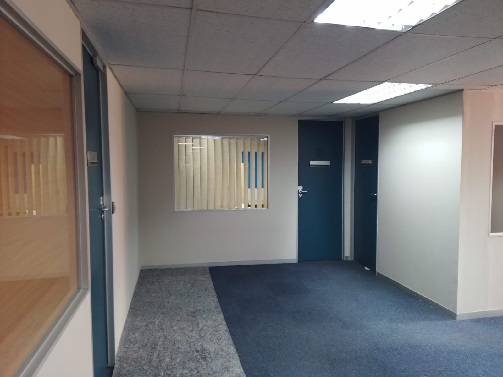
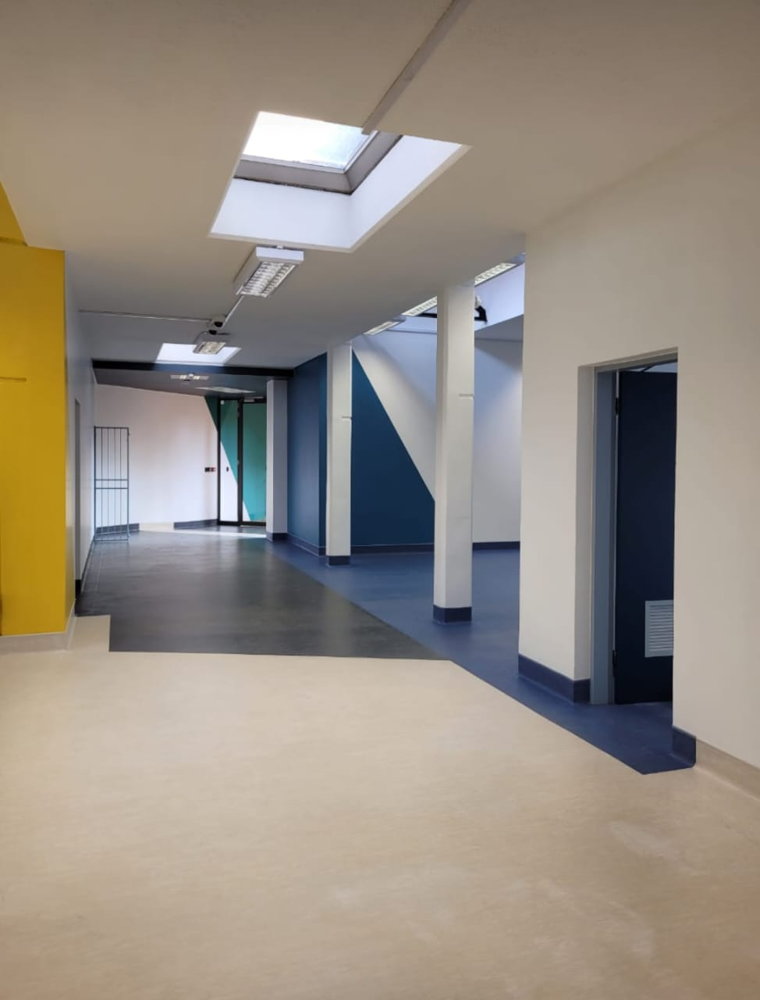
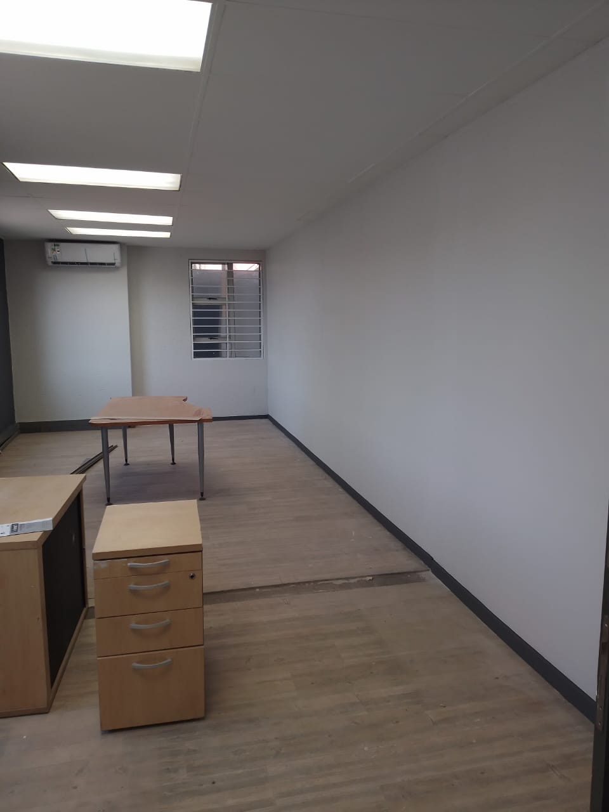
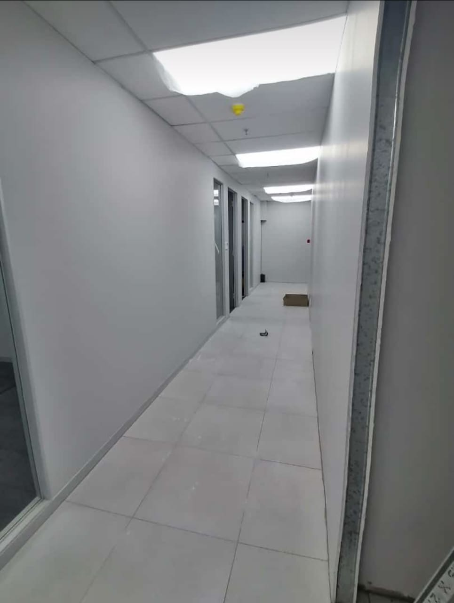
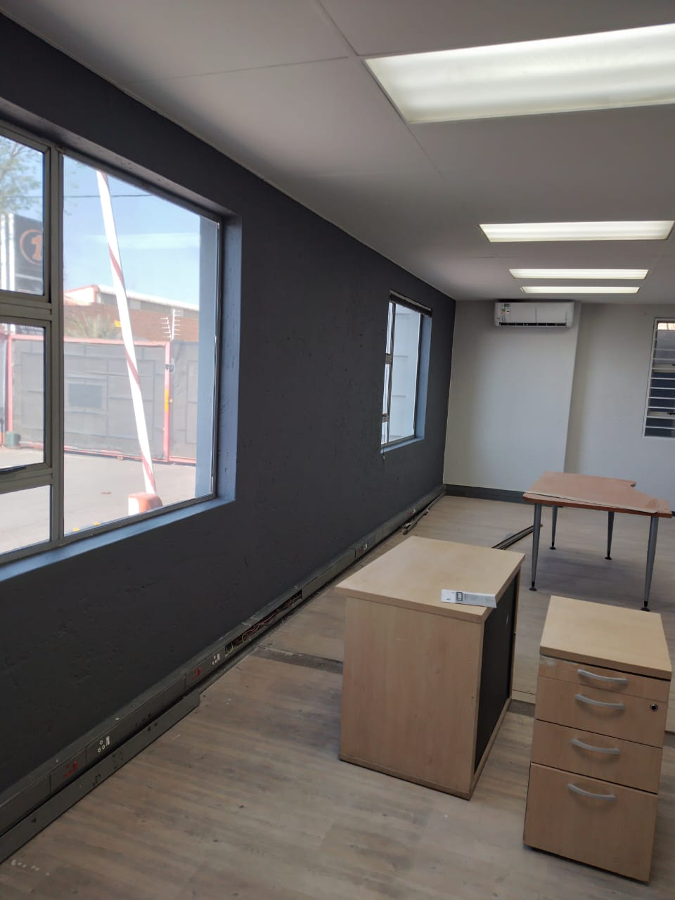
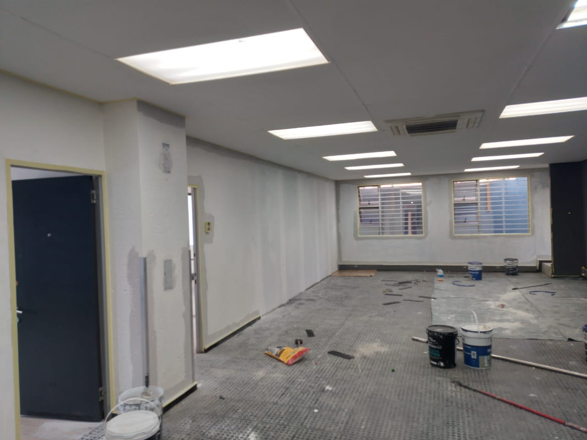
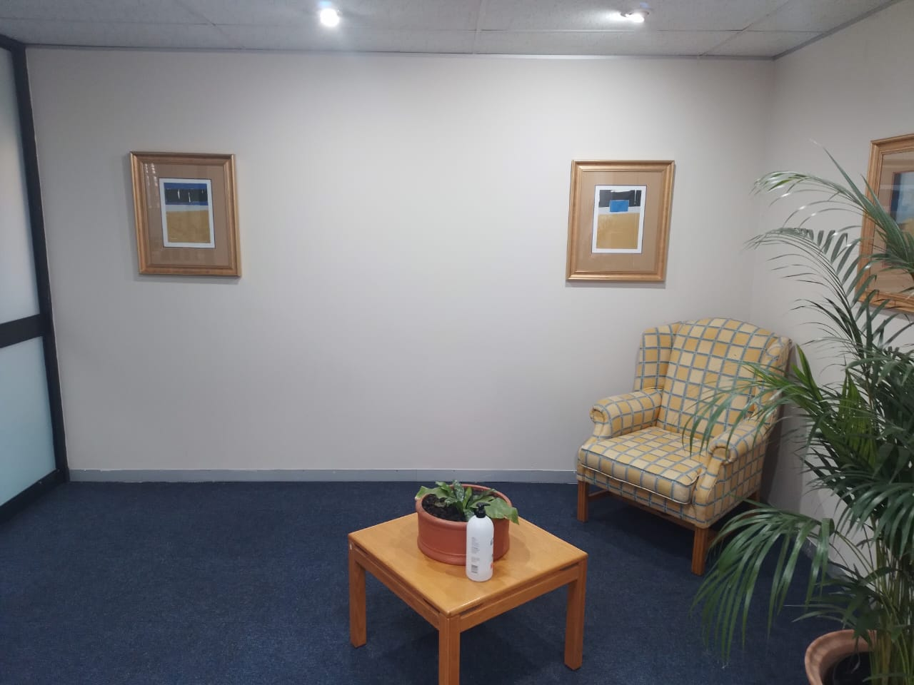
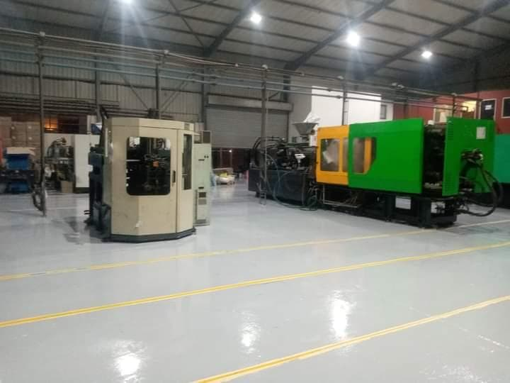

At Jay Paintworks, we specialize in providing top-notch commercial painting services tailored to meet the unique needs of businesses. Our experienced team is dedicated to delivering high-quality workmanship, using premium materials to ensure a durable and attractive finish for your commercial property.
Our Commercial Painting Services Include:
Interior Painting: Transform your office, retail space, or warehouse with a fresh coat of paint that enhances the ambiance and professionalism of your business environment.
Exterior Painting: Boost your curb appeal with our expert exterior painting services, designed to protect and beautify your commercial building against the elements.
Surface Preparation: We ensure all surfaces are properly prepared before painting, including cleaning, sanding, and priming, to guarantee a smooth and long-lasting finish.
Custom Color Consultation: Our team can assist you in selecting the perfect color scheme that aligns with your brand identity and creates the desired atmosphere for your business.
Eco-Friendly Options: We offer environmentally friendly paint options that are low in VOCs (volatile organic compounds), promoting a healthier workspace for your employees and customers.
Our commitment to quality and customer satisfaction sets us apart in the commercial painting industry.
We work closely with our clients to understand their specific needs and deliver results that exceed expectations.
Industrial Painting Services
In addition to our commercial painting services, Jay Paintworks also offers
specialized industrial painting solutions. We understand the unique challenges
and requirements of industrial environments, and our team is equipped to handle
projects of all sizes and complexities.
Our Industrial Painting Services Include:
Protective Coatings: We apply high-performance coatings that protect industrial surfaces from corrosion, chemical exposure, and wear and tear.
Equipment Painting: Our team can paint machinery, tools, and other equipment to enhance their appearance and extend their lifespan.
Structural Steel Painting: We provide expert painting services for structural steel components, ensuring they are protected from rust and environmental damage.
Floor Coatings: We offer durable floor coating solutions that improve safety and aesthetics in industrial facilities.
At Jay Paintworks, we prioritize safety and efficiency in all our
industrial painting projects. Our experienced team follows strict safety
protocols to ensure a secure working environment while delivering exceptional
results.
Contact us today to learn more about our industrial painting
services and how we can assist with your next project!









Frequently Asked Questions
What types of paint do you use?
We use high-quality paints from reputable brands to ensure a durable and beautiful finish. The type of paint used depends on the surface and location (interior or exterior).
How long does a typical painting project take?
The duration of a painting project varies based on the size and complexity of the job. We provide an estimated timeline during the consultation phase.
Do you offer free estimates?
Yes, we offer free estimates for all our painting services. Contact us to schedule a consultation.
What areas do you serve?
We serve various locations. Please contact us to find out if we cover your area.
How many coats of paint do I need to change the colour of a wall?
Actual number of coats depends on the quality of paint as well as color shades you're switching to and from but expect atleast two coats to change color, especially when switching between light and dark shades or using vibrant colors. For a significant change, like dark to light, or when using high-pigment colors such as bright red, yellow, or orange, a third coat may be necessary to ensure complete coverage and a uniform finish.
A significant color change requires a second coat to completely cover the old color and prevent it from showing through.
Using a primer before painting can help reduce the number of coats needed, especially when making drastic color changes. Primers create a uniform base that enhances paint adhesion and coverage.